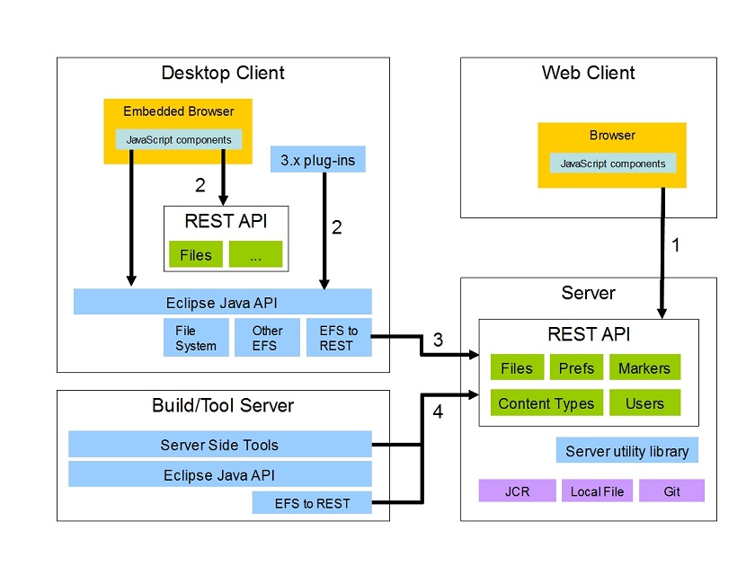

| Architecture overview | ||
|---|---|---|
|
|
||
| Client architecture | ||
Orion consists of loosely coupled components written in JavaScript, and server-side services exposed via REST-oriented HTTP APIs. These components and services can be combined in many different ways to create various kinds of applications. The natural expression of the Orion vision is Browser-based tools written in JavaScript interacting with data in the cloud via REST APIs. However parts of Orion can also be used in traditional desktop clients as well as server side applications. The data being manipulated by such tools can reside either on a remote server or a local machine. The architecture of your Orion-based application will often be driven by other constraints. Operating on local data offers better performance and facilitates offline usage, but doesn't provide the always secure, always backed up nature of storing data on the server. Whether your tools run in a browser or a rich client may depend on what other development tools you need to work with.
The following are examples of architectural configurations that Orion components and services can be used in:

|
|
||
| Client architecture |